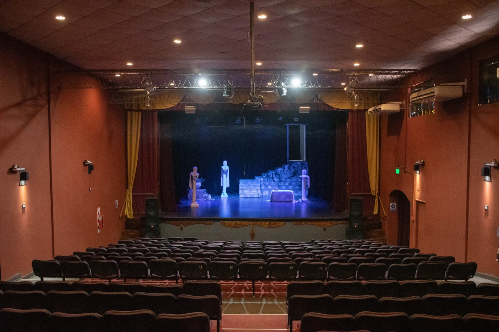
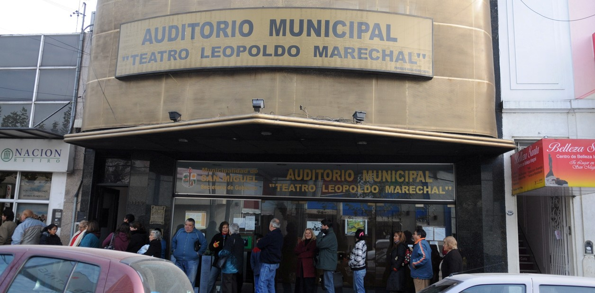

Cnel. Charlone 1146, San Miguel, Provincia de Buenos Aires, Argentina
+54 11 6091-7100
Cnel. Charlone 1146, San Miguel, Provincia de Buenos Aires, Argentina
+54 11 6091-7100
El Teatro Municipal Leopoldo Marechal de Moreno cumple 34 años y a pesar de la difícil situación que atraviesa la comunidad artística -como consecuencia del COVID-19- la nueva administración, bajo la dirección de Luis Donghi, no sólo restauró las instalaciones sino que además se propone reconstruir la historia de este importante centro cultural.
“Estamos armando un archivo artístico-histórico, nos adaptamos a las circunstancias y encontramos en esta adversidad una manera de seguir unidos como comunidad”, asegura Cintia Donghi, administradora del Marechal, y agrega: “con motivo de empezar a acercar a los artistas al teatro estamos convocando a todos aquellos que actuaron alguna vez para dar testimonio y recrear así nuestro pasado contemporáneo del que no tenemos registro desde el año 1995, porque los gobiernos pasan, los cargos cambian, pero la historia de nuestro teatro debe ser patrimonio cultural de todos los morenenses”.
En el marco de las actividades para este nuevo aniversario el teatro está generando una serie de entrevistas a diferentes personalidades de la cultura entre ellos a Alberto Bruzzone, -su primer director- para empezar a reconstruir parte de la historia, que le pertenece a todas las vecinas y vecinos y que estará disponible en la fan page de Facebook del teatro.
“Nos sentimos maravillados de tanto cariño y buenos deseos, y más aún de la cantidad de historias y de fotos que nuestra comunidad nos acercó para ser parte de nuestra memoria, nos agradecen la invitación y la participación” remarca Donghi, y asegura: ”lo más conmovedor es que cada una de esas personas se pusieron a recordar su historia que es también un pedacito de la nuestra”.
El teatro Leopoldo Marechal se inauguró el 9 de julio de 1986 durante la intendencia de Doctor Héctor Ibañez, bajo la dirección de Alberto Bruzzone y abrió sus puertas con la obra “Las manos de Euridice” de Pedro Bloch, interpretada por Hugo Verón y contó con la presencia de la viuda del poeta Elvia Rosbaco de Marechal. Además en los actos oficiales participaron: Oscar Lustrón quien recitó el poema “La Patria Joven”, de Leopoldo Marechal y el ballet folklórico municipal a cargo de la profesora Susana Gabotti con la zamba “La Donosa”.

El Municipio de Moreno rescata esta importante labor de registrar y mantener activa la memoria cultural de la comunidad porque permite desarrollar el presente y planificar un futuro. Por su parte Roberto Del Regno, subsecretario de Cultura, remarca que la gestión de Mariel Fernández pone en valor al trabajador municipal, “puesto que un artista como Luis Donghi, actor de profesión, es quien está al frente del proyecto”. Gestiones comprometidas de este alcance y desarrolladas junto con las vecinas y los vecinos, son las que permiten a la comunidad morenense conservar su acervo cultural y que este perdure en el tiempo.